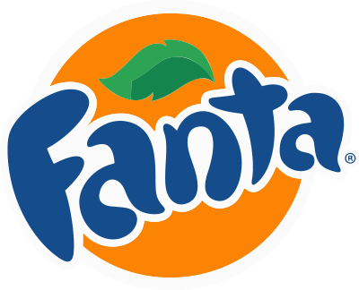
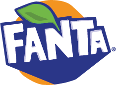
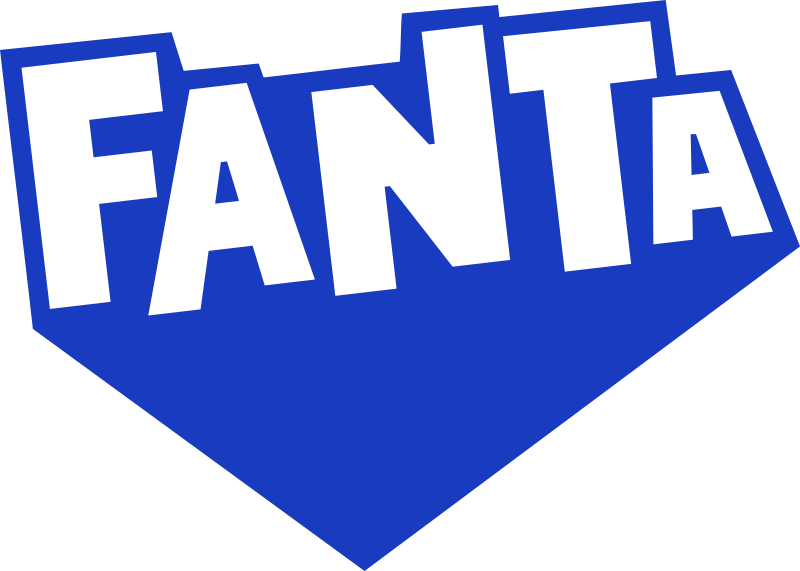

Welcome to All About Fanta
origin of fanta
During the Second World War, Germany was under a United States trade embargo, the British naval blockade and the import of Coca-Cola syrup was prohibited.To circumvent this, Max Keith, the head of Coca-Cola Deutschland (Coca-Cola GmbH), decided to create a new product for the German market, using only ingredients available in Germany at the time, including sugar beet, whey (a cheese byproduct), and apple pomace. He later described them as the "leftovers of leftovers". The name was the result of a brainstorming session, which started with Keith's exhorting his team to "use their imagination" (Fantasie in German), to which one of his salesmen, Joe Knipp, retorted "Fanta!".The German plant had been cut off from Coca-Cola headquarters following America's entry into the war after the Japanese attack on Pearl Harbor in 1941. After the war, the Coca-Cola Company regained control of the plant, formula, and the trademarks to the new Fanta product—as well as the plant profits made during the war. In 1943, 3 million cases of Fanta were sold in Germany. Many bottles were not consumed as a beverage but used as a cooking ingredient to add sweetness and flavor to soups and stews, as sugar was severely rationed. During the war, the Dutch Coca-Cola plant in Amsterdam (N.V. Nederlandse Coca-Cola Maatschappij) suffered the same difficulties as the German Coca-Cola plant. Keith put the Fanta brand at the disposal of the Dutch Coca-Cola plant, of which he had been appointed the official caretaker. Dutch Fanta had a different recipe from German Fanta, using elderberries as the main ingredients. Fanta production was discontinued in 1949. In 1955, in Naples, Italy, production of a new formulation with oranges began.
logos evolution

 